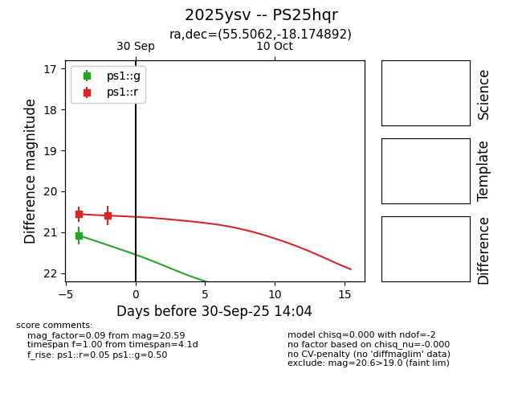
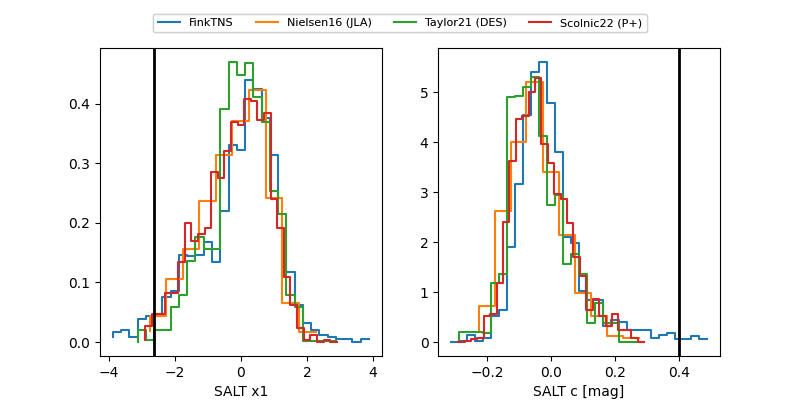

TNS: 2025ysv
YSE: 2025ysv
2025ysv (yse,tns)
PS25hqr (panstarrs)
equatorial (ra, dec) = (55.5062,-18.17489)
galactic (l, b) = (209.2821,-49.83548)


last ps1::g=21.08, ps1::r=20.59
1 ps1::g, 2 ps1::r detections